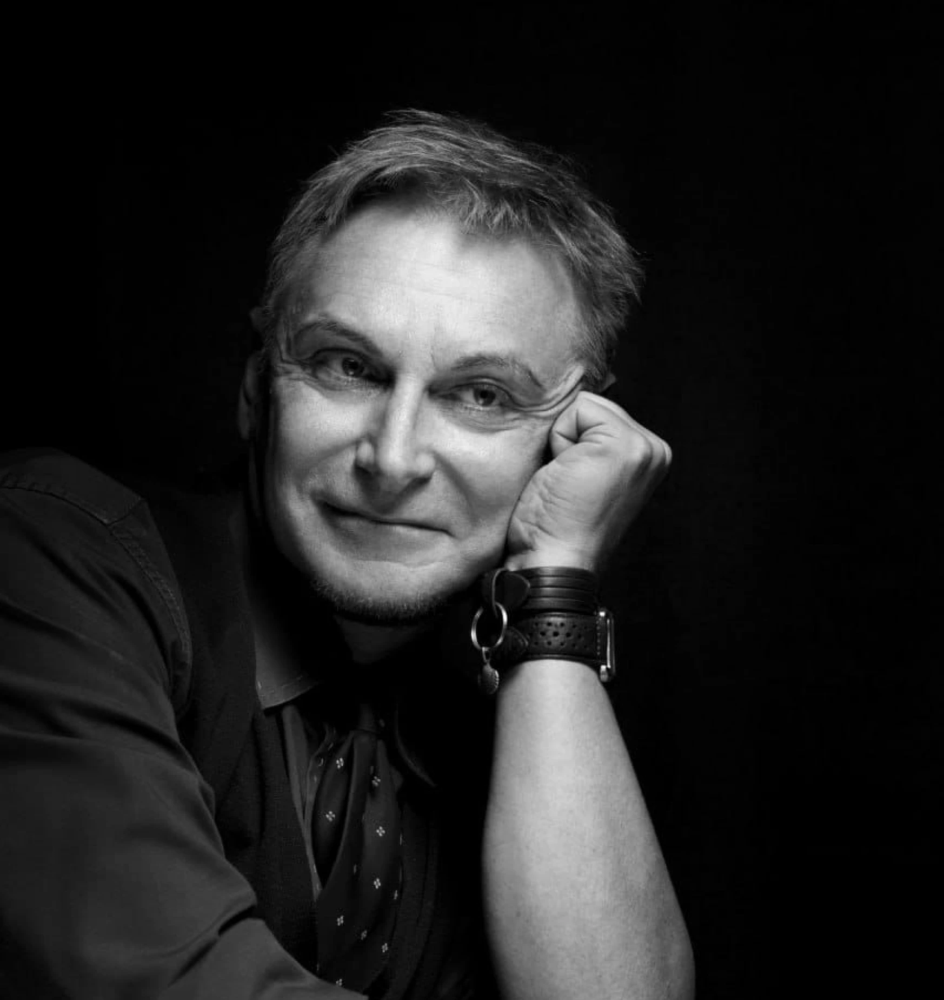

Задавать один ясный вопрос, а не два сразу, и не прятать совет или утверждение за вопросительной интонацией.
Разговор становится глубже
За четыре занятия вы научитесь задавать вопросы так, чтобы лучше понимать собеседника, запускать мышление и вести живой диалог вместо обмена готовыми мнениями.
Замечать тёмные места, связывать идеи и задавать следующий вопрос, который помогает мысли двигаться дальше.
Находить общую ценность, прояснять разногласия и вести разговор к решению даже с теми, от кого вы зависите.
Когда вопросы не ведут к диалогу
Клуб для тех, кто хочет меньше угадывать и советовать, а больше понимать, исследовать и создавать новые мысли вместе с собеседником.
Я хочу поддержать человека, но начинаю давать советы раньше, чем понимаю, что с ним происходит.
Мы много говорим, но разговор остаётся поверхностным и не приводит ни к одной новой мысли.
Мне нужно договориться с руководителем или важным для меня человеком, но я не знаю, какие вопросы задать.
Четыре встречи — от правильного вопроса к договорённостям
3 ноябрявторник · онлайн
Логика вопросов и настрой на диалог
Разберём цели вопроса, вопросительные слова и разницу между вопросом, утверждением и советом. Научимся задавать один вопрос вместо двух, различать риторические и сущностные вопросы, уточнять и углублять разговор.
На практике исследуем внешний и внутренний мир собеседника и почувствуем, когда вопрос «зачем?» неуместен, а вопрос «почему?» действительно нужен.
10 ноябрявторник · онлайн
Как получить инсайт — для себя и для другого?
Рассмотрим мышление как машину генерации идей: чем идея отличается от мысли, как находить продуктивный вопрос к тёмному месту и связывать то, что раньше казалось несвязанным.
Освоим технику параллельных миров и научимся проверять гипотезы вопросами.
17 ноябрявторник · онлайн
Как вести глубокие, интересные диалоги?
Будем входить в позицию исследователя, задавать вопросы на углубление и сохранять тактичность. Разберём, как поддерживать интерес собеседника и превращать светскую беседу в разговор, который запоминается.
Практика — коллективное интервью: мы будем задавать вопросы к неинтересной теме так, чтобы в ней обнаружилось что-то важное и живое.
24 ноябрявторник · онлайн
Как грамотно вести дискуссию и договариваться?
Научимся находить общую ценность, отделять согласие от разногласия и готовить вопросы к сложному разговору: в чём мы сходимся, в чём расходимся и что будем делать.
На практике проведём переговоры с трудным, но адекватным руководителем и разберём, как договариваться с теми, кто главнее вас или от кого вы зависите.
Теорию сразу проверяем на практике
Короткая теорияАндрей Иванович объясняет понятия и инструменты простым и понятным языком.
Разбор домашних заданийИсследуем диалоги участников и находим более изящные варианты достичь цели в диалоге.
Работа в группеЗадаём вопросы, проводим интервью и репетируем сложные разговоры.
РефлексияРазбираем, какие вопросы сработали и как их использовать в жизни.
Что входит в участие
01
Четыре живые встречи
Теория, разбор домашних заданий, практика и ответы на вопросы.
02
Записи занятий
Можно пересмотреть встречу внимательно и заметить новые ходы разговора.
03
Домашняя практика
Наблюдение за своими диалогами, плотные описания и подготовка реальных ситуаций.
04
Обсуждение в чате
Обратная связь от участников, вопросы и совместное осмысление кейсов.
В участие входит весь архив клуба — 51 запись
Все встречи с момента основания клуба — по 1,5–2 часа каждая. Смотрите в собственном темпе и возвращайтесь к темам, которые нужны именно сейчас.
занятий про счастье
Стоики, русская культура и собственный проект «Моя счастливая жизнь».
занятий по критическому мышлению
Аргументация, критика, пресуппозиции и формирование сильной позиции.
занятия по логике
Четыре закона логики и практика поиска пробелов в речи и текстах.
занятий по риторике
Как красиво говорить, защищать свои идеи и распознавать манипуляции.
занятий по принятию решений
Как анализировать ситуации, создавать проект решения и переходить к действию.
занятия «Учимся у Платона»
Как понимать свои желания, принимать сложные решения и сохранять верность себе.
занятия про конфликты и границы
Как сохранять ясную позицию, выдерживать давление и договариваться.

Ведущий клуба
Андрей Макаров
Доктор философских наук, профессор и культуролог. Помогает участникам задавать точные вопросы, углублять разговор и превращать общение в совместное мышление.
Профессор философии
Эксперт по критическому мышлению и аргументации
Автор образовательных программ по коммуникации и принятию решений
Что говорят участники
«Клуб классный. Понравилась именно практическая часть. Во время курса происходит коррекция мышления в сторону более осмысленного рассуждения».
«Очень вдохновляющая и дружелюбная атмосфера. Все открыты к общению и готовы делиться идеями. Знания помогают мне лучше формулировать мысли и увереннее общаться».
«Курсы с А. Макаровым дают возможность пройти через эти лабиринты с проводником и запомнить для себя подходящие маршруты».
«Всё объясняется очень доступно и с юмором. Живое общение, получаем ответы на свои вопросы в онлайн-режиме».
Задавать вопросы,
которые меняют разговор
Ноябрьский сезон: четыре онлайн-занятия, практика в группе, записи, домашние задания и общение с участниками клуба.